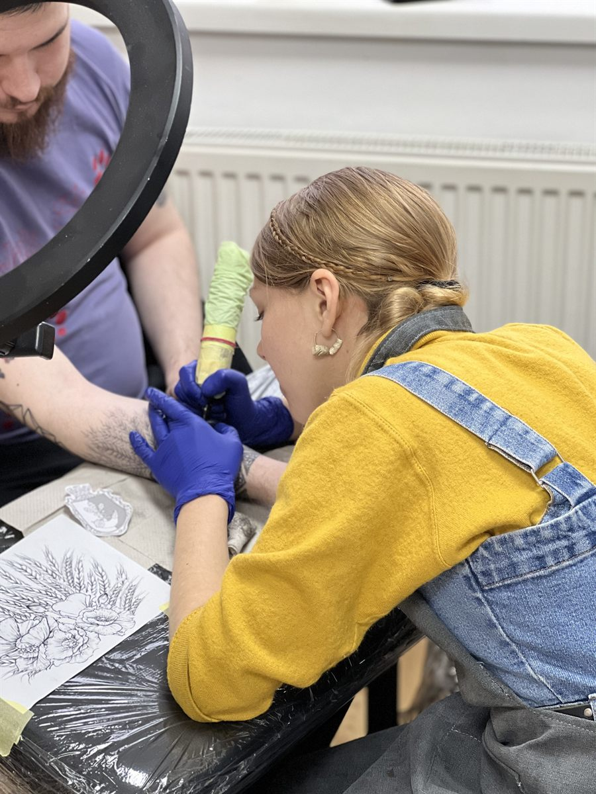
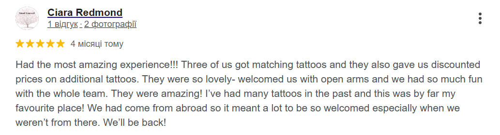
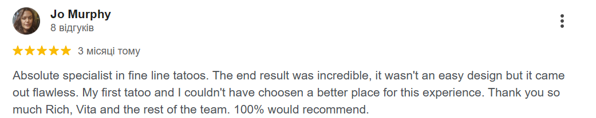
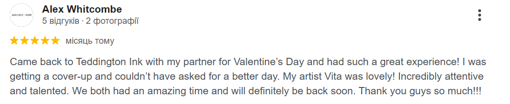

Fine Line
Light, clean, delicate pieces with soft detailing and elegant body flow.
Open pageFine line, graphic and custom tattooing for those drawn to subtle detail, personal symbolism, and elegant placement. Designed with care in London and Teddington.
Private enquiries, consultations and custom design discussions are handled directly through Instagram.

On weekdays, Vita is a tattoo artist. On weekends, a cat listener and a dog dreamer. She works mainly in graphic and fine line styles, bringing four years of experience and a calm, creative energy to every tattoo she creates.
Each design is created with care, intuition, and attention to placement, rhythm, and detail. To create for you, Vita recharges only with the best energy: fruits. The result is work that feels expressive, personal, and full of life without losing its refined finish.
A live portfolio featuring real work from Sa.li Tattoo, from fine line and floral pieces to graphic custom designs.
A scalable category structure for clients who want to browse by style before booking a custom tattoo in London or Teddington.
Light, clean, delicate pieces with soft detailing and elegant body flow.
Open pageBotanical tattoos, soft florals, rose compositions and refined organic forms.
Open pageDecorative motifs, balanced geometry and subtle statement placement work.
Open pageBespoke concept-led tattoos shaped around meaning, placement and mood.
Open pageEvery custom tattoo starts as a conversation, then becomes a carefully developed sketch designed to feel natural on the body and personal to you.
Send the concept, placement, size, references, and the feeling you want the piece to carry.
The sketch is shaped around your body and refined into something balanced, expressive, and wearable.
Before the session, the concept is polished into a custom piece ready to become your tattoo.
This is where references, symbols, flowers, ornaments, and personal details begin to come together into something truly yours. Graphic and fine line work often depends on a very thoughtful drawing stage.
The goal is not just to make a beautiful tattoo, but to create a composition that feels soft, intentional, and fully connected to placement.
Start your custom designA separate gallery for sketch ideas, custom draft work, and concept development behind the final tattoos.
Pricing is kept clear and simple, while leaving space for custom design and placement to shape the final quote.
Suitable for simple, smaller tattoos and concise fine line pieces.
Best for larger concepts, multiple pieces, or more developed custom work.
Final pricing depends on size, placement, complexity, and whether the piece involves custom design development.
Review snapshots from existing client feedback, presented as a clean visual proof point without crowding the page.



These review images were already present in the project and are used here as a simple, trustworthy social proof section that matches the site's premium style.
For bookings, custom design requests, and availability, Instagram remains the best first point of contact. The studio location is shown below for easy planning.
201 Waldegrave Rd, Teddington TW11 8LX
Perfect for clients searching for a tattoo artist in Teddington, a fine line tattoo artist near Richmond, or custom tattoo work within greater London.
Sa.li Tattoo is a tattoo artist in London and Teddington specialising in fine line tattoo, custom tattoo design, graphic tattoo work, floral tattoos, and elegant ornamental compositions.